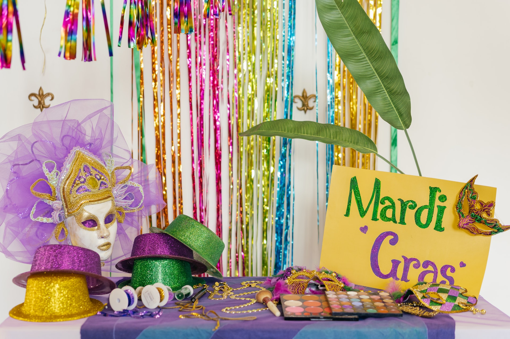
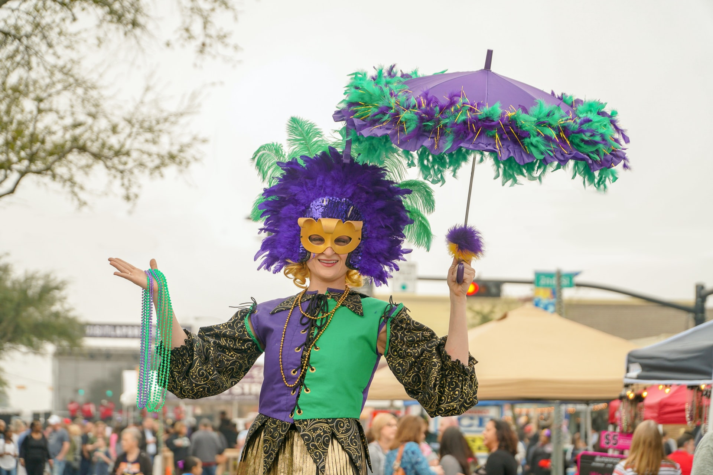

The Mayor Of New Orleans
LaToya Cantrell (née Wilder; born April 3, 1972) is an American politician serving as the Mayor of New Orleans, Louisiana since May 7, 2018. A Democrat, Cantrell is the first woman to hold the office. Before becoming mayor, Cantrell represented District B on the New Orleans City Council from 2012–2018.Cantrell was born as LaToya Wilder in Los Angeles. She moved to New Orleans in 1990 to attend Xavier University of Louisiana, where she earned a BA in sociology.
/cloudfront-us-east-1.images.arcpublishing.com/gray/WKCKD6YJGVDJ5PXETZB7O7QJAU.jpg)
Mardi Gras Celebrations

Mardi Gras or Fat Tuesday, refers to events of the Carnival
celebration, beginning on or after the Christian feasts of the
Epiphany (Three Kings Day) and culminating on the day before Ash
Wednesday, which is known as Shrove Tuesday. Mardi Gras is French for
"Fat Tuesday", reflecting the practice of the last night of eating
rich, fatty foods before the ritual Lenten sacrifices and fasting of
the Lenten season.
Related popular practices are associated with Shrovetide celebrations
before the fasting and religious obligations associated with the
penitential season of Lent. In countries such as the United Kingdom,
Mardi Gras is more usually known as Pancake Day or (traditionally)
Shrove Tuesday (derived from the word shrive, meaning "to administer
the sacrament of confession to; to absolve").

The holiday of Mardi Gras is celebrated in all of Louisiana, including the city of New Orleans. Celebrations are concentrated for about two weeks before and through Shrove Tuesday, the day before Ash Wednesday (the start of lent in the Western Christian tradition). Usually there is one major parade each day (weather permitting); many days have several large parades. The largest and most elaborate parades take place the last five days of the Mardi Gras season.